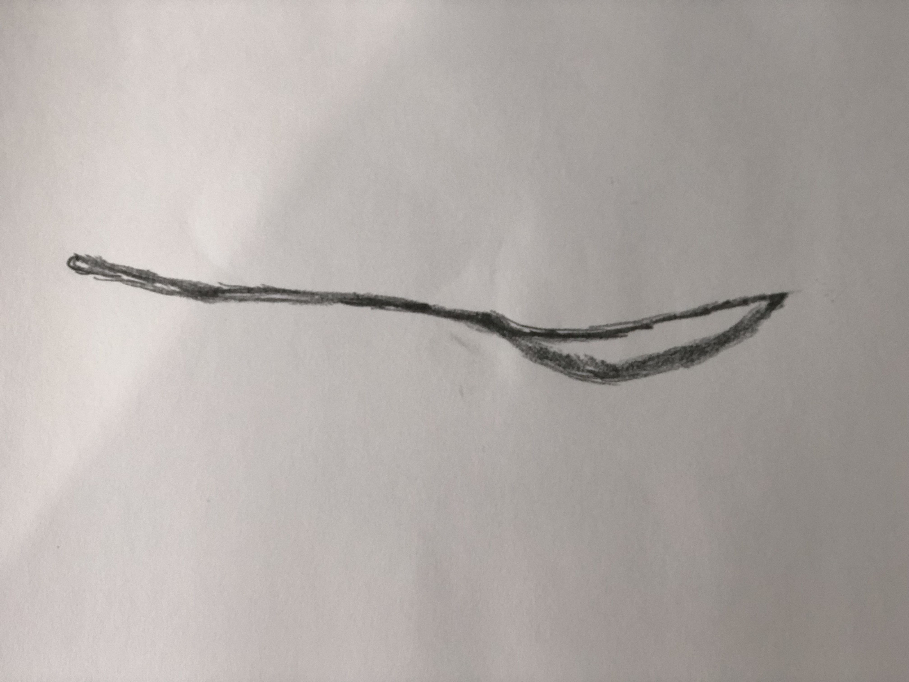

Spoon is primary used for dinning and preparing food nowadays in most circumstance, and usually there are two parts in a spoon one is the small shallow bowl-shaped container and second part extends from the first part with a long tail. The overall design and usage of the spoon has been pretty similar through the history, research said that the first spoon was found in the ruins of Ancient Egypt and has same design concept of today's spoon and ancient human also used it for food preparation, nevertheless the design of the spoon tail have changed through history based on the culture, religion and many other aspects.
There are visible affordances in the long flat tail which designs for better grasp and the small bowl-shaped container is design for measure, mix, stir and toss during the process of cooking and eating, however hidden affordance also exists in spoon because of the shape when spoons are made of hard materials they can also use as a opener for some beer and paint or object with similar lid.
Constraints exists in spoon, when spoons are made of metal or high thermal conductivity materials human will not be able to hold them when the spoon touches super-hot liquid or semi-liquid which counts as physical constraints. Spoons are usually made of different materials and when they are made of plastic, they won't be able to use in high temperature, when they are made of wood they won't be able to use close to fire and there are many other situation which concludes that spoon has the material constraints. Lastly, spoon is mostly used as an assistant tool which do not really have anything to do with the environment therefore there are no environmental constraints. The material constraints seem to have migrated to cultural constraints because in certain country or region they tend to make spoon out of wood because of the lack of some other nature resources.